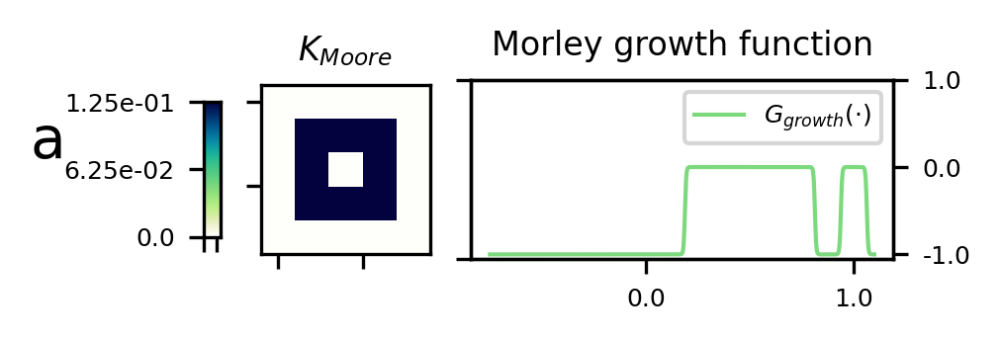
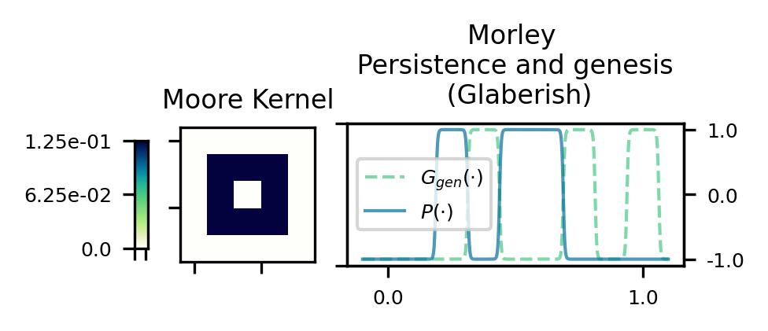

Lenia

Glaberish

B245/S368 in Lenia (top) and Glaberish
The B and S rules for Move/Morley don't overlap, so the Lenia growth function never exceeds 0. Scaling to fill the range -1 to 1 likewise results in too much growth.
Previous
--
Table of Contents
--
Next